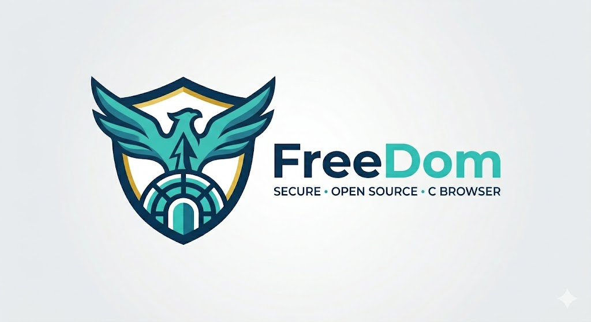

Click the URL bar, type an address, and press Enter or click Go. Allowed URLs: - https://(TLS 1.3, PQ-hybrid KE, leaf RSA >= 3072 / ECDSA) - /path/file.html (local file) Pages render with structure (headings, links, paragraphs) and you can click links to navigate. Remote images and author colors are off by default (Privacy by Default); the menu button at the top right toggles them (or Ctrl+I for images). A page that uses images shows a tracking warning and a placeholder per image. Ctrl+L focuses the URL bar. Sites whose end-entity certificate uses RSA 2048 are rejected with status 5 (weak algorithm). This is fail-closed by design.